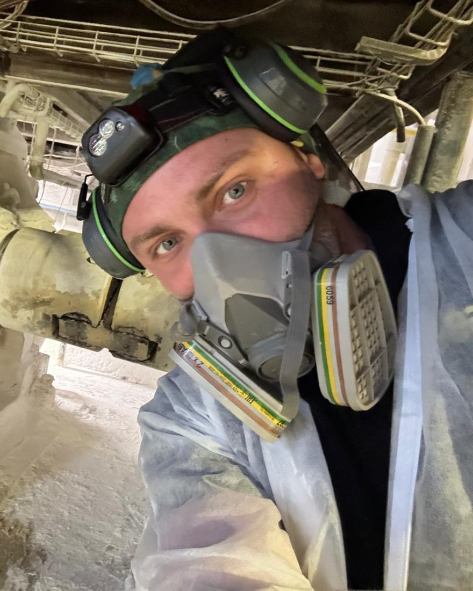

Soluții chimice pentru mentenanță industrială, întreținere instituțională, curățare și dezinfecție în industria alimentară
Consultanță tehnică (identific cea mai eficientă soluție pentru proces), optimizare procese de curățenie, performanță în timp.
- Clienți
- Exclusiv firme
- Zonă
- Zona de Vest
- Răspuns
- cel mai scurt timp
Problema dumneavoastră nu este în listă? Descrieți problema și vă spun dacă o pot rezolva.
Aplicații pe echipamente
Aceeași depunere se tratează diferit de la un echipament la altul. Alegeți echipamentul și vedeți ce se depune și cum se verifică rezultatul.
Instalații CIP
1,5 m/s
Viteza minimă de curgere în conducte
Ce se depune
Grăsimi, proteine și piatră de lapte sau de bere, pe toată lungimea circuitului.
Cum se verifică
Concentrația, prin conductivitate sau prin titrare, temperatura pe retur și viteza de curgere, de regulă minimum 1,5 m/s în conducte.
Schimbătoare de căldură și pasteurizatoare
Δp
Căderea de presiune pe schimbător
Ce se depune
Depuneri arse de proteine și de minerale, care izolează termic plăcile sau țevile.
Cum se verifică
Căderea de presiune și temperatura de ieșire revin la valorile unui schimbător curat.
Rezervoare și tancuri
pH
pH-ul apei de clătire, egal cu cel al apei de rețea
Ce se depune
Peliculă de grăsimi și de proteine, plus inelul de depunere de la nivelul lichidului.
Cum se verifică
Inspecție vizuală cu lanterna, teste rapide ATP și pH-ul apei de clătire, care trebuie să revină la cel al apei de rețea.
Conducte și furtunuri
UFC
Probe microbiologice din apa de clătire
Ce se depune
Biofilm și depuneri în coturi, la îmbinări și în zonele moarte, unde soluția nu circulă.
Cum se verifică
Probe microbiologice din apa de clătire și controlul vizual al garniturilor și al îmbinărilor demontabile.
Utilaje și linii de procesare
ATP
Teste rapide în punctele greu accesibile
Ce se depune
Grăsimi, proteine și amidon pe suprafețe deschise: benzi, mașini de tocat, mese, malaxoare.
Cum se verifică
Control vizual pe suprafața uscată și teste rapide ATP în punctele greu accesibile.
Piese și componente metalice
H₂O
Pelicula de apă se întinde uniform pe suprafață
Ce se depune
Uleiuri minerale, unsori, emulsii de prelucrare și șpan.
Cum se verifică
Apa se întinde uniform pe suprafața degresată, fără să se strângă în picături, iar piesa se usucă fără pete.
Echipamente electrice
MΩ
Rezistența de izolație, înainte de repunerea sub tensiune
Ce se depune
Praf, ulei și depuneri de carbon pe motoare, pe contacte și în tablouri.
Cum se verifică
Rezistența de izolație, măsurată înainte de repunerea sub tensiune.
Bazine de apă potabilă
[de completat]
[Mărimea de control verificată înainte de predare]
Ce se depune
Oxizi, depuneri minerale și biofilm, pe bazine cu membrană, din inox, din fibră sau din beton.
Cum se verifică
Igienizare cu dezinfectant avizat pentru apă potabilă, înainte de predare. Serviciu disponibil în județul Timiș.
Informațiile de pe această pagină sunt orientative. Produsul, concentrația, temperatura și timpul de contact se stabilesc după evaluare, conform fișei tehnice și fișei cu date de securitate.
30 de aplicații uzuale
Situațiile pe care le întâlnesc cel mai des. Dacă a dumneavoastră nu este aici, sunați.
Curățare și depuneri
- 1Curățarea instalațiilor CIP
- 2Depuneri minerale în instalații CIP
- 3Piatra de lapte
- 4Depuneri de calcar
- 5Depuneri proteice
- 6Depuneri de grăsimi
- 7Biofilm în instalații
- 8Depuneri carbonizate
- 9Curățarea schimbătoarelor de căldură
- 10Curățarea conductelor industriale
Metale și suprafețe
- 11Îndepărtarea ruginii
- 12Pete de rugină pe inox
- 13Curățarea inoxului
- 14Oxizi metalici
- 15Degresarea suprafețelor metalice
- 16Pasivarea inoxului
- 17Protecția împotriva coroziunii
- 18Curățarea aluminiului
Industria alimentară
- 19Curățarea instalațiilor din industria laptelui
- 20Curățarea instalațiilor de procesare carne
- 21Curățarea fabricilor de băuturi
- 22Curățarea utilajelor alimentare
- 23Curățarea mașinilor de spălat lăzi
- 24Curățarea rezervoarelor alimentare
- 25Curățarea conductelor pentru produse alimentare
Mentenanță industrială
- 26Curățarea utilajelor industriale
- 27Îndepărtarea uleiurilor și grăsimilor
- 28Curățarea componentelor tehnice
- 29Curățarea electrică și tehnică specială
- 30Alegerea detergentului industrial potrivit
Domenii de aplicare
Lucrez exclusiv cu firme din Zona de Vest.
Industria auto și mecanică
Industria alimentară
Instituții publice și centre comerciale
Curățări grele
Ferme și abatoare de păsări și animale
Cum lucrez
Îmi descrieți problema
Prin telefon sau prin formular. Pentru început ajung câteva detalii despre depunere, suprafață și instalație.
Vin la fața locului
Văd depunerea, materialul, apa și procedura actuală de curățare. Unele probleme se rezolvă din dozare sau din temperatură, fără schimbarea produsului.
Testăm soluția
Facem o probă pe o zonă mică sau pe un ciclu de spălare și notăm parametrii: concentrație, temperatură, timp de contact.
Livrez și urmăresc rezultatul
Produsul vine cu fișa tehnică și cu fișa cu date de securitate, în limba română. Revin să verific rezultatul și ajustăm dozarea, dacă este nevoie.
Patru factori decid rezultatul
Orice curățare depinde de patru factori: chimia, temperatura, timpul de contact și acțiunea mecanică. Principiul este cunoscut drept cercul lui Sinner.
Dacă unul dintre factori scade, altul trebuie să crească. De aceea, uneori ajung cinci minute sau zece grade în plus, fără un produs mai tare.

Cine răspunde la telefon
Tinu, consultant tehnic pentru soluții chimice profesionale. Lucrez în teren de 10 ani, în industria auto și mecanică, industria alimentară, instituții publice și centre comerciale, curățări grele, ferme și abatoare de păsări și animale.
Studii postuniversitare, inginer. Tehnician în protecția și calitatea mediului. Antreprenor. Reprezentant tehnic. Experiență de 10 ani în servicii speciale și curățare cu gheață carbonică.
Nu am magazin online și nu trimit oferte fără să văd problema. Vin, evaluez și răspund pentru recomandarea făcută.
Acopăr Zona de Vest, cu deplasare la sediul dumneavoastră.
Întrebări frecvente
Lucrați și cu persoane fizice?
Nu. Lucrez exclusiv cu firme și instituții, în domeniile de aplicare de mai sus: industria auto și mecanică, industria alimentară, instituții publice și centre comerciale, curățări grele, ferme și abatoare.
Ce zonă acoperiți?
Acopăr Zona de Vest, inclusiv [localitățile deservite]. Pentru proiecte mai mari discutăm și în afara zonei.
Pot testa soluția înainte de comandă?
Da. Recomandarea se verifică printr-o probă la fața locului, pe o zonă mică sau pe un ciclu de spălare, înainte de orice comandă.
Cât costă evaluarea la fața locului?
[Evaluarea este gratuită sau are un tarif: de completat.]
Primesc documentația produselor?
Da. Fiecare produs se livrează cu fișa tehnică și cu fișa cu date de securitate, în limba română.
Cum aleg detergentul industrial potrivit?
După patru lucruri: tipul depunerii, materialul suprafeței, metoda de curățare și apa folosită. Abia apoi contează produsul. Un detergent bun, folosit la concentrația sau la temperatura greșită, dă același rezultat ca unul slab.
De ce nu afișați produsele și prețurile pe site?
Pentru că alegerea depinde de depunere, de material și de instalație. Același produs poate rezolva o problemă într-un loc și poate strica o suprafață în altul. Întâi evaluez, apoi recomand.
Cum îmi dau seama dacă am nevoie de o soluție acidă sau de una alcalină?
Ca regulă generală, depunerile minerale (calcar, rugină) cer soluții acide, iar murdăria organică (grăsimi, proteine) cere soluții alcaline. În practică apar des depuneri mixte, de aceea este nevoie de evaluare.
Produsele sunt sigure pentru inox și aluminiu?
Depinde de produs. Inoxul nu tolerează contactul prelungit cu clorurile, iar aluminiul este atacat atât de soluțiile puternic alcaline, cât și de cele puternic acide. Verific compatibilitatea înainte de orice recomandare.
În cât timp primesc un răspuns?
Răspund la solicitări în cel mai scurt timp. Pentru urgențe, sunați direct.